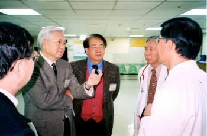
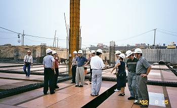
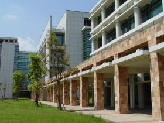

國家衛生研究院電子報 第 443 期 院務紀事 充滿人文氣息的醫學教育家∼憶黃崑巖教授 In memory of Dr. Kun-Yen Huang  2月的季節，國衛院隱身在一片白色的霧海中，初聞黃崑巖教授辭世的消息，閉上眼睛，腦海裡浮現的是他銀白的頭髮、銳利的目光及雍容的儀表。13年前，黃教授為本院新到任臨床研究組副主任，當時有幸與他晤面訪談，回想起來，那是一段愉悅與充實的經驗。黃教授對台灣醫學教育的貢獻，極具深遠的影響；與本院也有著深厚的歷史淵源。 2月的季節，國衛院隱身在一片白色的霧海中，初聞黃崑巖教授辭世的消息，閉上眼睛，腦海裡浮現的是他銀白的頭髮、銳利的目光及雍容的儀表。13年前，黃教授為本院新到任臨床研究組副主任，當時有幸與他晤面訪談，回想起來，那是一段愉悅與充實的經驗。黃教授對台灣醫學教育的貢獻，極具深遠的影響；與本院也有著深厚的歷史淵源。黃崑巖教授是成功大學醫學院的創院院長，1982年辭卸美國喬治華盛頓大學微生物學教授之職，毅然返國，創辦成大醫學院，歷經16年的耕耘、播種、灌溉後，猛然回首，他發現那一棵幼苗已經茁壯。在完成階段性任務之後，恰逢本院草創之初，1999年3月，黃教授加入本院研究團隊，除了中國傳統醫藥的臨床試驗外，主持醫學教育的評鑑工作以及本院竹南院區的規劃等，都在他的志趣與專長範圍之內。2001年7月及2003年3月，他肩負起代理組主任的重擔，帶領組內同仁經歷兩次關鍵的過渡時期，功不可沒。 為台灣醫學教育評鑑催生 1998年，美國聯邦政府教育部的國外醫學教育與認可委員會，以其嚴謹的評鑑標準評定我國的醫學院評鑑工作屬「無法相比（non-comparable）」一類，主要原因在於其認為我國評鑑程序的嚴謹與周詳度不夠理想。我國一直以來都未將醫學院的評鑑制度化，不能定期進行評鑑，發現缺失不易改善或是徹底糾正，以至醫學教育的品質堪慮。黃崑巖教授在當年11月底前，即撰寫詳細的醫學評鑑制度建議書，目的在設立一個中立而公正且永續性的評鑑制度。他建議分為兩階段，第一階段為規劃階段，第二階段為依第一階段所研擬的程序正式進入評鑑的階段。 1999年7月本院成立獨立的醫學院評鑑委員會（Taiwan Medical Accreditation Council, TMAC），以進行定期而客觀的醫學教育評估工作，進而提升國內醫學教育品質。2002年3月黃崑巖教授以主任委員的身分赴美國為我國醫學教育評鑑制度進行答辯，並正式接獲美國教育部來函通知我國已通過其審核，使國內醫學評鑑制度晉升與美國「可評比（comparable）」的地位，這不僅開啟國內醫學院評鑑制度的新里程，更是我國醫學院教學品質獲得國際肯定的重要指標。2006年教育部成立「高等教育評鑑中心」為獨立的評鑑專職機構，醫學院乃為中心評鑑學門之一，醫學院評鑑委員會也自該年起併入評鑑中心為所屬單位。 為竹南院區注入文化素養 本院在興建竹南永久院區之時，黃崑巖教授是竹南院區建築規劃決策委員會召集人之一，借重其一手蓋起成大醫學院及附設醫院的寶貴經驗，他將基本理念灌注在建築物裡。他曾說建築物的本身就應成為一個機構的標幟，而一個舒適的工作環境，不僅對研究機構來說很重要，就連學校，甚至任何一個工作場所都是一樣重要，而雅緻、乾淨、漂亮、舒適本身就是一種生活教育，所以每一個細節都要認真地去做。「建築雖是一個很複雜的創作，卻很有趣」；他也認為建設的工作其實是一種自修，一邊進行、一邊探討，然後一邊去凝結智慧。「規劃任何一樣東西都要將該地方的色彩包涵在裡面」，竹南院區的建築一方面在建築師引進國際化的構想下，一方面也用一些建築物將台灣地方特色強調出來；「騎樓」與「迴廊」的設計，均可以表現出台灣熱帶風情的一面。 黃教授對歷史相當有興趣，他認為一個知識分子智慧的累積，最重要的就是靠歷史。他曾說歷史是人類活動的紀錄，歷史就等於是人類成長、文明成長的紀錄。如果懂得過去是怎麼來的，對現況的瞭解與掌握方向便不相同，因為知道過去，所以可以預測將來怎麼走，這就是歷史。在整體院區規劃的理念中，黃教授點出了我們正在創造歷史，並要有歷史的使命感，如此才知道如何承先啟後。此外，社區文化的培養與領導，也是我們應該負起的責任，如何創造一種文化薰陶的環境，不僅可以影響院區的人，對鄰近居民也能產生潛移默化的氣質陶冶。 為醫學教育奉獻一生心力 黃崑巖教授是一位學醫出身的教育工作者，他放棄了人人稱羨的臨床醫學，轉而在醫學教育這塊園地辛勤耕耘。他曾說：「作一個良醫以前要先作一個成功的人。」醫師所處理的都是生、老、病、死方面的問題，這些問題是人生的一大部分，也是人性的一大部分；所以醫師要視病患的這些痛苦為首要的顧念。「病人就是你的老師」這是他特別強調的理念。3年半前，偶然機會得知黃教授在一場與醫師的醫學人文講座以「談人文素養」為題，在看似寥寥數語的投影片中，想說的話全在他的腦海裡、心裡。聽說當時他的身體有恙，但仍抱著虛弱的身軀，即使氣若游絲，也選擇以言教及身教的方式，為醫學教育的改革鞠躬盡瘁。 窗外的春雨依舊綿綿，此情此景，猶如對黃教授的思念；而遠處火紅的櫻花，卻好似哲人永不熄滅的熱情，令人懷念。 《文/圖：編輯中心趙孝茜》 |
GPN4909205633 回首頁 出版資訊 影音節目 最新著作 國衛院全球資訊網 訂閱 取消訂閱